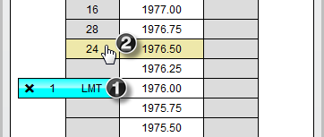
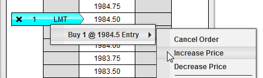
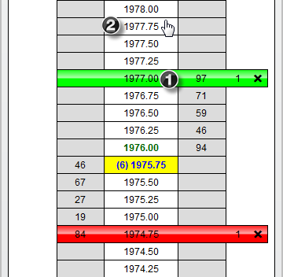
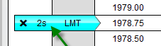
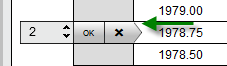

|
<< Click to Display Table of Contents >> Modifying and Canceling Orders |


|
Modifying and Canceling Orders
|
<< Click to Display Table of Contents >> Modifying and Canceling Orders |
|
Orders are modified within the SuperDOM by selecting the order and clicking on the new price cell. Optionally you can also enable Single Click Order Modification of your Profit Target and Stop Loss orders within the SuperDOM Properties.
 How to modify the price of entry and exit orders
How to modify the price of entry and exit orders
Modifying entry and exit orders Pending orders in NinjaTrader may be modified by clicking to select the order and clicking once more at the new price point. This approach is more effective than drag and drop because it eliminates the potential errors made by accidentally letting go of your mouse button and dropping an order on the wrong price. 1.Click using your left mouse button on the order you wish to modify. 2.Once selected, you will see the cursor change to a hand from an arrow, then choose the price you are modifying the order to and click using your left mouse button to complete the modify process.

The left mouse button is used to modify the price of limit, stop-market, stop-limit, and MIT orders. You can cancel out of a price modification (remove the hand cursor) by pressing the ESC key.
You can also increase or decrease the price of an order by pressing down on the right mouse button with the mouse cursor hovering over the order, which will display all orders consolidated at that price. You can then select any individual order to increase price or decrease price in one tick increments
 |
 How to modify the price of Stop Loss and Profit Target orders
How to modify the price of Stop Loss and Profit Target orders
Modifying Stop Loss and Profit Target orders 1.Click with your left mouse button in the center column on the Stop Loss or Profit Target order you want to modify. 2.Once selected, you will see the cursor change to a hand from an arrow, then choose the price you are modifying the order to and click using your left mouse button to complete the modify process.

Note: If there are multiple orders consolidated at a price level, modifying the price will modify all orders at that price level. |
 How to modify the size of an order
How to modify the size of an order
Modifying the size of an order To modify the size of an order, click on the Size Marker (marked by the green arrow in the image below) with your left mouse button

The quantity field will appear which allows you to set the new order quantity by either entering a new quantity or using the mouse wheel to scroll the value higher or lower. Either press the "OK" button to submit the change or the "X" button to cancel the operation.

Order size changes are handled according to NinjaTrader's advanced FIFO optimization capabilities.
|
 How to modify Stop Loss and Profit Target orders with a single click
How to modify Stop Loss and Profit Target orders with a single click
Single Click Order Modification You have the option of enabling Single Click Order Modification for ATM Stop Loss and Profit Target orders via the SuperDOM Properties dialog window accessible by right mouse click context menu. This is an advanced feature that can provide you with the clear advantage of efficiently modifying orders in fast moving markets. If you are a scalper then this option is for you.
Once enabled, to modify Stop Loss and Profit Target orders click in the center/PRICE column. Clicking in the PRICE column on the BID or above when long will adjust your Profit Target order prices, below the BID will adjust Stop Loss order prices. Clicking in the PRICE column on the ASK or below when short will adjust your Profit Target order prices, above the ASK will adjust your Stop Loss order prices.
|
Cancelling Orders
|